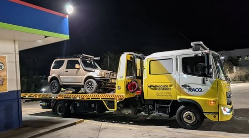
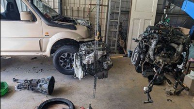
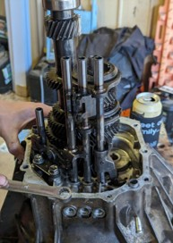

The joy/bane of owning a second-hand, small 4wd
The joy/bane of owning a second-hand, small 4wd
In February 2022 I owned and nice and reliable Toyota Corolla Sportivo.
6-speed, 8200rpm rev limit, auto climate control, good on fuel, reliable; everything you could ask for from a car.
I however, appear to ask for me. I (appear to) want to be relied upon for the cars’ survival.
Working an office job and living in a unit, I missed the feel of hands-on projects, tinkering and working on things on evenings and weekends.
So I went shopping, and bought a used Suzuki Jimny, with ~230xxx km, 2” body lift, mud tyres, and auxilliary battery setup.
Oh yeah, one small problem, I thought. It falls out of 4th gear sometimes. No grinding, no noises, just pops out.
But no problem, you wanted a project, and you got a project.
{kind=link}
After driving it for a fortnight, I noticed it squealed when turning left. Two weeks later, it begin squealing while driving straight.
Good news Brad, your wheel bearing needs replacing… Oh, and while you’re down there, why don’t you check the rest of the bearings and brakes.
And in what was great news for auto parts shops, they all appeared to need replacing.
// wheel bearing/brake pic
To make matters worse, when I first tried to replace the squeaky bearing, I was stopped short by a totally rounded brake line fitting.
Back to the drawing board, or hydraulic line shop, to get some more parts.
// brake line pic
Good news, you have a job interview. Bad news, it’s a bit of a drive away and you need to fix the other side’s bearing.
Also, it’s tomorrow. Hope you didn’t want an early night.
Luckily, I got some practice from the first side, and this was a straightforward affair.
And, after this side, I’d replaced all the bearings and brakes on the rear axle. Only the difficult axle remained.
// jimny axle in press
While driving now, you notice the car struggles badly on hills. It’s a small, 1.3L engine, so that’s expected.
Small engines love to rev, or that’s what they say. So you step on the fun pedal, and the engine roars… but the car starts to decelerate.
Ruh-roh.
Time to go clutch shopping, and no, sorry Jess, not for handbags.
Clutch replacement went (somewhat) smoothly to begin with. For a home workshop, lying on the ground, things started well.
But soon one bellhousing bolt would have other ideas. After 1 hour I had the gearbox mounts and driveshaft out.
After 6 more hours, all I had to show was all-but-one bellhousing bolts.
My dad has always been a chatty bugger, it’s a great trait I’ve inherited, and today was no different.
Chatting to the neighbours, talking about my progress, they say “oh, our son is doing an apprenticeship and just brought his new adjustable breaker bar hoem to show me. Why don’t you try that?”
After 6 hours of practicing my curse words, sweet talking, tongue holding, and more, the breaker bar got it on the first go.
After this, the removal and most replacement went smoothly. Unfortunately it was not saturday afternoon, so flywheel machining couldn’t happen until Monday, but the reassembly was easy.
And yes, I put antisieze on the bellhousing bolts.
// clutch replacement pics
With a new clutch the jimny was driving like a new car, and I was chuffed. Finally! It’s running well. Two weeks driving to-and-from work without issue, what more could I ask. And, well, you’ve always wanted a slightly larger road bike frame, so why not take the jimny to grab one. It’s only 45 mins away. Merging on to the motorway, accelerating faster than I’ve ever been able in the Jimny, I get greeted with a Christmas tree of dash lights. “Weird, I wonder if my alternator is on the way out?” I think to myself. Let’s see if it clears up. “Oh, is that smoke?” “Perhaps I should stop. Like now.” Crap. I stop, side of the motorway, and assess the situation. Fan and water pump belt snapped, engine cooking on the motorway. I wait for the tow truck.
// tow truck picture 
{kind=link}
The next morning, we (the royal we) assess the damage. And either someone put glitter in my oil, or I’ve got what will soon be a very unhappy engine. The good news for me, these cars shared the same engines as Swifts, Lianas, and a handful of other Suzukis. The bad news, none of these engines are in stock anywhere nearby. After 3 weeks of daily searching, I found one. 70,000km, good price, from an automatic Swift. And after 4 more weeks of working on weekends and after my day job, the engine replacement was complete. And while it was out, I swapped the gearbox for another without issues.
// Two engine pic. 
{kind=link}
“Finally. The culmination of jimny issues has been reached, replacing the biggest part of the car. Now, now I can just get to driving the car reliably.”
Oh Brad, haven’t you learnt by now? Stop saying these things.
What’s this, new noises? Interesting. They’re front brakes, the ones you didn’t change. You’re this far in, what’s rebuilding the swivel hubs while you’re at it? So, I order new swivel hub parts, front wheel bearings and seals, and the stickiest grease I’ve ever seen, and get cracking.
// swivel hub rebuild pics.
Cool, all 4 corners repaired and mended, and the new engine running without issue.
Oh wait, what’s that weird power surge you get when the AC is switched on? Winter has just ended, you should really think about fixing that. Lucky for me, my Dad (hero of the story again) is a fridgie, and fixes AC systems daily at work. So he regassed the system, and we were golden.
// AC system photos
And wouldn’t you believe it, trouble free motoring for a few months. I also decided during this time to get a thicker, all-alloy radiator to improve cooling ability and “futureproof” the car for a little while. In February 2023, I took it for my first offroading trip, to the beach at Bribie Island. On a stinking hot day, the AC evaporator icing up and not working, we got to the beach. Tyres aired down, 4wd engaged, we set off. And didn’t get far. After getting stuck twice, and burning my feet severely on the sand, we headed back and gave up on the trip. My front hubs didn’t seem to be engaging, and the jimny wasn’t going to make it with only 2wd.
// bogged trip picture
Another problem to be solved with the addition of new parts. Some manual hubs, an adapter plate, and some capped vacuum lines later, the jimny was ready to roll! And more (mostly) trouble free motoring was had. But despite all the work, the jimny was still a little sloppy when cornering, and had a bad jolt when rocking back into the handbrake. A problem now spotted to be my quickly deteriorating suspension bushes. So, some new suspension, radius arm, and sway bar bushes were ordered. But the problem of fitting them would have to wait.
// jimny mtb pic
After visiting my friend’s new house in Ipswich, and driving home, the Jimny developed a (not) fun and (un) welcomed new noise, only in 4th gear. These R72 gearboxes are known for losing 4th gear, the failed bearings often collapsing and ruining other gears in the process. Having an existing issue, I had already ordered a rebuild kit for them. Not wanting to risk further damage, it was back to my parents house to get straight into it. The next day, I set to work, calling my mates Ali and Zac around to help. Following a guide online, it was relatively straightforward to replace the bearings and seals within the box. But starting at midday was a silly idea, and we only finished at 1am, before starting work at 8 that day, and both needing to drive 40 mins home. And while the rebuild was all finished when we packed up, we didn’t want to fill it before the gasket adhesive had set, so we left that for 2 days to dry (and for us to rest).
// Gearbox rebuild pics. 
{kind=link}
More months of trouble-free-ish driving ensued, with the next big issue being the suspension. Pressing suspension bushes sounded like a pain in the bum, so I certainly took my time building up motivation. But eventually, I had to bite the bullet. Using a small, home-workshop press, I carefully managed to remove all the radius arm bushes, each one seeming to nearly max-out this non-industrial machine. This also included forgetting to align two of the slotted bushes, and having to remove and re-press them into place. But, after a couple of weekend days, the whole underbody had new bushes, including suspension, steering (tie rod bushes and tie rod ends), and sway bar.
// Suspension press image.
Sadly after this time, my AC compressor also died. It is currently on the to-do list for repairs.